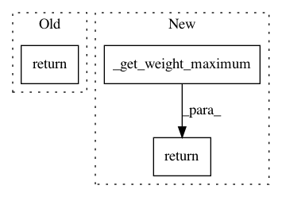

d3cf95e05a7a98c055bb5f14796972d4a5ac935a,spynnaker/pyNN/models/neural_projections/connectors/from_list_connector.py,FromListConnector,get_weight_maximum,#FromListConnector#Any#,220
Before Change
def get_weight_maximum(self, synapse_info):
// pylint: disable=too-many-arguments
if self.__weights is None:
return numpy.amax(synapse_info.weights)
else:
return numpy.amax(numpy.abs(self.__weights))
@overrides(AbstractConnector.get_weight_variance)
After Change
def get_weight_maximum(self, synapse_info):
// pylint: disable=too-many-arguments
if self.__weights is None:
return self._get_weight_maximum(
synapse_info.weights, len(self.__targets))
else:
return numpy.amax(numpy.abs(self.__weights))
@overrides(AbstractConnector.create_synaptic_block)
In pattern: SUPERPATTERN
Frequency: 4
Non-data size: 3
Instances
Project Name: SpiNNakerManchester/sPyNNaker
Commit Name: d3cf95e05a7a98c055bb5f14796972d4a5ac935a
Time: 2021-02-22
Author: andrew.gait@manchester.ac.uk
File Name: spynnaker/pyNN/models/neural_projections/connectors/from_list_connector.py
Class Name: FromListConnector
Method Name: get_weight_maximum
Project Name: SpiNNakerManchester/sPyNNaker
Commit Name: 359e614052de07714b9ca547fffa63f3bd38c2f3
Time: 2018-10-29
Author: andrew.gait@manchester.ac.uk
File Name: spynnaker/pyNN/models/neuron/synapse_dynamics/synapse_dynamics_stdp.py
Class Name: SynapseDynamicsSTDP
Method Name: get_weight_maximum
Project Name: SpiNNakerManchester/sPyNNaker
Commit Name: bb9f5f36c24eaa5cb320c9ef157cc9fbed295b10
Time: 2019-10-28
Author: andrew.gait@manchester.ac.uk
File Name: spynnaker/pyNN/models/neuron/synapse_dynamics/synapse_dynamics_structural_static.py
Class Name: SynapseDynamicsStructuralStatic
Method Name: get_weight_maximum
Project Name: SpiNNakerManchester/sPyNNaker
Commit Name: bb9f5f36c24eaa5cb320c9ef157cc9fbed295b10
Time: 2019-10-28
Author: andrew.gait@manchester.ac.uk
File Name: spynnaker/pyNN/models/neuron/synapse_dynamics/synapse_dynamics_structural_stdp.py
Class Name: SynapseDynamicsStructuralSTDP
Method Name: get_weight_maximum